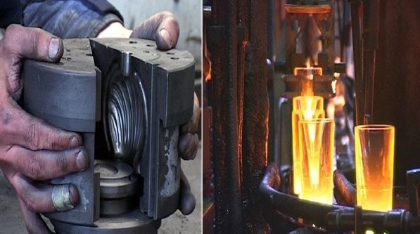
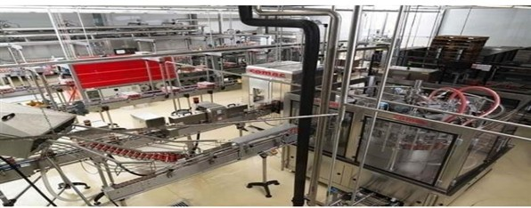
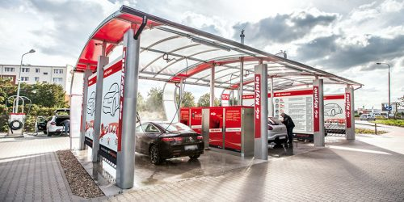
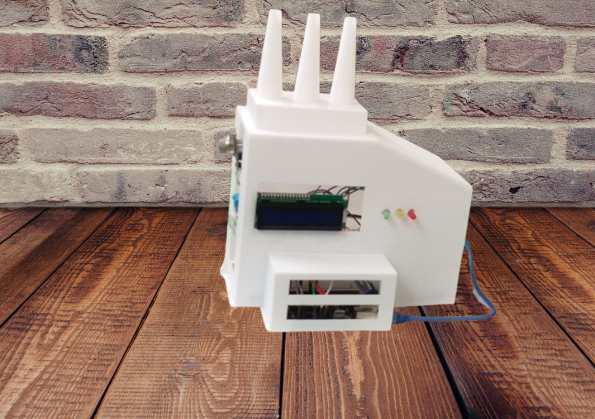
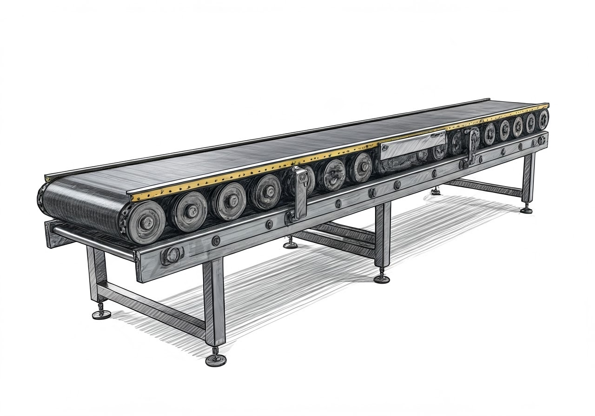

Industrial Automation | PLC Systems

Industrial Automation: Engineered a control architecture using Siemens S7-1200 PLCs and TIA Portal to regulate vibrating feeding mechanisms. Developed full electrical schematics in QElectroTech to eliminate overflow risks and ensure functional process safety.
Tech Stack: Siemens PLC, TIA Portal, QElectroTech, Industrial Control Design.

Optimized heating system automation and analyzed thermal control loops.
Impact: Enhanced production efficiency and reduced energy waste.

Designed a 4-stage automated system with ultrasonic sensors and safety interrupt logic.
Impact: Enabled reliable vehicle tracking and process automation.
Industrial IoT | Embedded Systems

IoT & Safety: Developed a real-time monitoring platform integrating MQ-2 and DHT11 sensors via Bluetooth. Engineered a mobile dashboard using MIT App Inventor to provide proactive threshold-based safety alerts for industrial environments.
Tech Stack: MQ-2/DHT11, ESP32, Bluetooth (HC-06), Embedded C, MIT App Inventor.
Control Systems | Embedded Logic

Embedded Logic: Designed an IR-based control architecture for automated object sorting. Implemented state-based motor control logic in Embedded C to synchronize sensor triggers with real-time actuation, reducing positioning errors and delays.
Tech Stack: IR Sensors, DC Motor Control, Embedded C, Logic State Machines.